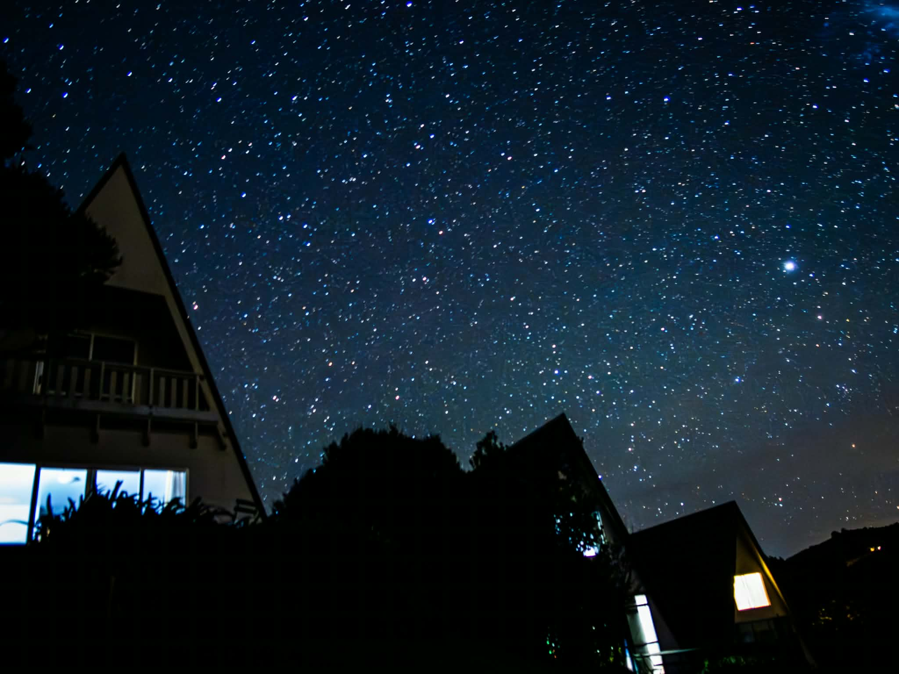

Not sure where to start? Ask Ethicare
Not sure where to start? Ask Ethicare Kia ora. I’m so glad you’re here
New Zealand shaped my own family’s story, and I’ve walked many healthcare families through this same decision. Whatever stage you’re at, I hope this reads like advice from someone who has done it.
One of the things I loved most about living in New Zealand was the blue sky and the quality of the light. Of course there were cloudy days too, but I really noticed the difference from home. Even on a crisp, chilly morning the sun would often be shining. You’d wrap up, step outside into the fresh air and feel glad to be out in it. It’s one of the everyday things I still miss.
And then there’s the coffee. New Zealanders take it almost as seriously as the Italians, which suited me perfectly. A really good coffee, a crisp morning and a blue sky — sometimes it’s the little things you remember most.

Find your profession
We recruit across New Zealand healthcare — medicine, medical imaging, allied health, mental health and theatre — for the large healthcare organisations we work with. Nursing is the one area without vacancies at the moment — employers recruit overseas nurses only when they cannot fill from within New Zealand — but its guide is here all the same.
Medicine
GPs, hospital doctors and specialists.
ExploreNursing & midwifery
Registration and the move, explained — no vacancies at the moment.
ExploreMedical imaging & radiation therapy
Radiography, MRI, ultrasound, nuclear medicine and radiation therapy.
ExploreAllied health
Physiotherapy, occupational therapy, speech-language therapy and dietetics.
ExploreMental health
Psychiatry, psychology, occupational therapy and social work.
ExploreTheatre & perioperative
Anaesthetic technicians and perioperative roles.
ExploreCan’t see your profession? Check your pathway
Why New Zealand?
A move this big is about far more than the job. The role is why you come — life outside it is often why you stay.

“Northland is absolutely beautiful. I love hiking and photography, so having beaches, forests, coastal walks and incredible scenery so close by is a real highlight. It’s much quieter than I was used to — for anyone who enjoys the outdoors and a laid-back beach lifestyle, it’s a great place to live.”
It is a long way from home — flights back to the UK, South Africa or elsewhere are a cost to plan for — and housing, groceries and everyday essentials cost more than many people expect. The guide to living here — figures and sources →
Working in New Zealand healthcare
Explore the health system, working environments, cultural safety and Te Tiriti.
Explore New Zealand, region by region
Compare each region the way you’d choose — the hospitals and the work, housing and rents, schools, and what an ordinary weekend looks like.
Picture settling somewhere specific
Detail on each area so you can imagine the everyday, from the commute to the schools to the weekends, before you ever get on a plane.
You won’t be doing this alone
Can my family come too?
For the healthcare professionals we work with, partners are usually eligible to work, children can generally come with you, and many roles offer a pathway to residence. The exact route depends on your role — but for most, this is a family move, not something you do alone.
Finding your feet, and your people
The second friendliest country in the world. New Zealand came second, just behind Costa Rica, in Condé Nast Traveller’s 2026 Readers’ Choice Awards, voted for by its readers (October 2026). Source →
Belonging matters just as much if you’re moving on your own. New Zealand is small and welcoming, and the first months are easier when you know what to expect — the friendships, the communities already here, and the honest dip that comes around month three.
Help me understand. Help me plan my move.
Two things we built for exactly this decision, both free, whether or not your job comes from us.
Help me understand
Ask anything about working, registering or moving to New Zealand, the way you’d ask someone who has done it. It answers from our own guides and points you at the page you needed.
“Will my registration transfer to New Zealand?” · “Could my partner work on my visa?” · “Where would suit a family with two careers?”
Ask Ethicare
Help me plan my move
The whole move, sequenced — registration, visa, money, the people coming with you, the first month — in the order it actually happens, saved as you go.
Eight stages. Start at whichever one you are at.
Open Plan EthicareRoles open in New Zealand now
A snapshot of what’s live. We work with several employers, so more moves happen than ever reach the board — if nothing here fits your profession or region, tell us and we’ll be in touch when something does.
Curious or close to deciding, there’s no pressure in a conversation — or register your interest and hear from us when something suits.